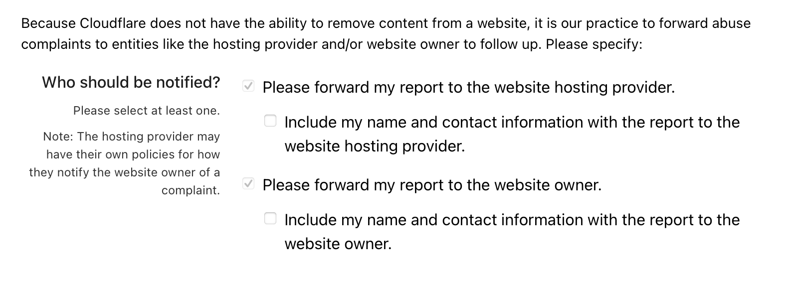

David Thomas Shonack @dweebus
Computer science student and privacy advocate based in California. Interested in security, software development, digital rights, and much more.
Introduction
CloudFlare is an industry leader in providing high quailty security , content delivery, and performance optimizations. For legitmate web services and websites, it does a very good job, and even offers free tier security making deployment simple and seemless. This blog isnt to bash Cloudflare but to bring to attention the role it has when malicous actors use Cloudflare to hide its infrastructure.
Investigation
Friday morning I got up from bed and the first thing I see is an imessage saying the following:
California State Department of Motor Vehicles (DMV) Final Notice: Enforcement Penalties Begin on May 31.
Our records show that as of today, you still have an outstanding traffic ticket. In accordance with California State Administrative Code 15C-16.003, if you do not complete payment by May 31, 2025, we will take the following actions:
1. Report to the DMV violation database
2. Suspend your vehicle registration starting May 31
3. Suspend driving privileges for 30 days
4. Transfer to a toll booth and charge a 35% service fee
5. You may be prosecuted and your credit score will be affected
Pay Now:https://example_malicous_site.com
Please pay immediately before enforcement to avoid license suspension and further legal disputes.
(Reply Y and re-open this message to click the link, or copy it to your browser.)
I read this and I thought man I would not only have my vechile registration suspeneded by but also my driving privelages. Not to mention the fact my credit score will be affected and ill have to pay a 35% fee. I started to think what kind of cruel world we live in, when I was reminded that I did not own a car. In all seriousness I love getting these types of messages because it opens the door for investigatoins! I fired up kali linux and burp and dove right in.
Analysis
First thing I did was run curl to see what im dealing with curl -vv example_malicous_site.com. And I recieved a 404. I've noticed a trend with phishing campaigns and its that they target specfic user agents like moblie users. So I looked up valid user agents for moblie iphones and ran the curl again. curl -vv -A "Mozilla/5.0 (iPhone; CPU iPhone OS 18_3_1 like Mac OS X) AppleWebKit/605.1.15 (KHTML, like Gecko) Version/18.3 Mobile/15E148 Safari/604.1" example_malicous_site.com And I got results! Now intially it looked like California DMV's website with a little form that would prompt you to put in information like your name, email, and address things like that. And when I filled it out with sample responses the connection hung. Now I don't know if there was an error on my part, i was walking through the site connection by connection and I did not see a POST with this form data and I did not track it via web network inspector. What I did notice is that there endpoints like /front/init?token=jwt_token and /front/any which is what was being posted. It seemed like the user was being activley fingerprinted. What i did notice is I managed to find an insecure endpoint which I believe was the /front/config page that gave me a bit more insight on what was going on.
Theres a couple of interesting things that standout first off the cloudflare is being annoying, but if we look at the response we get some more info on what im guessing is the communication between the web server and the c2. I also noticed a success, 200 and another success message. Before I try to put everything together let me give you another piece of important context, check this request out.
Dfxd2ytJZhHeN2H/XuZWIdx4VzpYoFq19XdDX4H7wXkUWuJWfJq57rIU6eGj3PLM4nU3FW2RRf6BdaguBLEercXlpPNZgCz40VphpFKPIx2ATDz7OfzgWWiU04XPaNKbfgC1tmIfqLX6G6grYagwVzbZRYCUm4VmA9/StPweKPY/QslPklvAU8BL/RGdkiRdMsZ4HxSr3zOrZ5ib43mzLyLcfvYV91h55Ptlua9v729EfrUNK0omojZCyNPqjQzWdkTrDIoZZ+b0dx1hWjFGYlB8lzzCGqM3SIHR35IflQSKbEoFCz+rbX4c4X9+oEYXEQFtX1S7sqQ/FzLQCCIJ0FDUgbD1vfHj0DyzQAY4GKVjiUOGnOZklRkrXB5IJ4k2TRPfc+Uh9Db669PBxcHNrjP7lej50Aas1YSFDc9Iszr9bfZ+Ho7Pg2GVXiRTWidaaZznPRW3YEHOJ2HEhI58ujo=While I dont have the full GET and POST requests, encrypted or encoded data was being sent from my machine to the malicous site. So a POST would have encoded data like that, weirdly enough even GET request, it would persist without a content length or paramter the payload would still appear under the headers. Gathering everything heres what I think was happening:
- First the front/init?token=jwt_tokwn was attempting to fingerprint users and would assign them a cookie
- Next the user would traverse the page and constantly send POSTS to front/any
- The local js files were encrypting the payload and the data being sent to front/any
- Taking a look at the image, we see 3 notifications of success, I believe a 3 stage process is happening
- First when the application recieves the data that is warrented a success or 200
- Next once recieved it is then decoded, and gives a success: true
- Finally the data is sent to the c2 server from the applications web server.
This left kind of a bitter taste in my mouth since I feel like I was put in a position to do something good but I just couldn't take the next step. And I also wish I could've saved the js scripts to peek at how they encrypted the data. So what does this have to do with CloudFlare?
CloudFlare
CloudFlare did an awesome job of hiding the attackers web server ip. On whois the domain was created the day of and resolved to 4 ipv4's and 4 ipv6's with if I remember cloudflare nameservers. Which is already fun but what really made me confused as to why there report abuse page makes it mandatory to notify the host of the website? Check it out:
While I understand that CloudFlare does not have the ability to take down domains, its response time is abismal. Many hours after the websites interface was or shutdown by some law enforcement CloudFlare was still serving the domain. Now I dont know too much about CloudFlare and maybe the domain was still cached but why is it so easy for attackers to hide themselves behide reputable sources, and why is it so difficult to strip websites of this shielding? Cloudflare made this invesitgation many times more difficult.
- Just a Pipe - Cloudflare is just a pipe and is not responsile as to what flows through it
- Section 230 - Protects these companies from any sort of prosecution due to them not being liable to the content being produced under "free speech"
Similar to how banks are being held liable for money landering, so does these companies. The data that passes through them is significant.
Conclusion
CloudFlare is huge and scalable providing many benifits to website hosts and its users. But when something becomes to easy to access other will begin to abuse it. We need to hold these companies accountable, they are far from pipes. In my case Cloudflare was the middleman in protecting this malicous attacker syphioning money away from innocent people. With the power this infrastrcure has it needs to be more regulated.